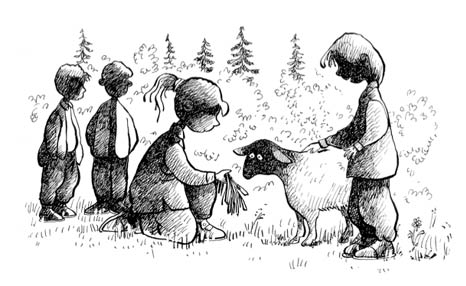

KARAGÖZ
Erdoğan Amcam çelebi adamdı. Gerçekten öyleydi; zamanında bin tane kitap aldık, okuduk, artık çelebi olmak lazım diye değil. İmkân bulamayıp okuyamasaydı, çobanlık da yapsaydı memleketi Demirci’de, gene de öyle olurdu; dört dörtlük bir çelebi olurdu Erdoğan Amcam.
Bir gün ağzından ters bir laf, bir küfür çıktığını duymadım. Küfür bilmediğinden, hâliyle bizimle futbol da oynayamazdı. Şerif ise çok iyi futbol oynardı. Arkadaşımdır diye söylemiyorum o da çok efendiydi, o da küfre karşıydı, mecbur kalmadan asla ana avrat gitmezdi. Küfre karşı olduğundan ayva çaldığımız bahçeden kaçarken bir araba sopa yedik, ayvaları da kaptırdık ya. Titizlenip kitabı okurken ders çıkaranlar bu mevzuları da unutmazlar.
Erdoğan Amcam, her Ramazan’da sırat köprüsünde lazım olur diye, ne yapar ne eder bir kurbanlık alırdı. Biz de dost ve akrabalara bayram ziyaretleri yapardık. Şeker Bayramında lokum kesenlere, Kurban Bayramında da kurban işine girenlere uğrardık mutlaka.
Bayramdan üç beş gün kadar önceydi. Gene bir ziyaret sırasında civanımın mahallesindeyiz. Kardeşim Aytül, Şerif’im civanım, bir de bacısı Sanem, oturdukları evin arka tarafında dört çocuk bahçedeyiz. “Babam kurbanlığı aldı” dedi civanım, “Biz besleyeceğiz!” “Her gün ot yediriyoruz” diye söze girdi Sanem. Ben de, “İyi olur, bu mevsimde ot daha iyi gider” sessizliğinde dinliyorum.
“Koçun adı Karagöz” dedi Şerif’im. “Kocaman siyah lekeler var gözlerinin etrafında” diye tarif etti, “Çok sevimli” diye de bağladı. Her Kurban Bayramında böyle olur; sever, besler, sonunda da keserler, gözünün karasına bakmazdı kimse. “Haydi, gel koçu gezdirelim” dedi yiğidim.
Yaşımız on bir civarı, belki çeyrek geçiyor, belki buçuktayız. Hilkatten de çok iri yapılı olmadığımızdan, bu koç gezdirme işi biraz tedirgin ediyor insanı. Neyse ki civanım hem cesur hem de gözü karadır. “Nerede koç?” dedim. “Aha ya” dedi. On metre kadar ilerimizde bir ağacın altında otlayan, kuzuya çalan dört ayaklı bir şey gösterdi. Belli ki civanım geleceği görmüş, üç beş yıla kalmaz bu hayvanın boynu bükülmez bir koç olacağını anlamıştı.
Hayvanın yanına gittik. Kaldırıp başını, yalan yanlış bize doğru baktı, sonra önündeki otlardan yemeye devam etti. Yerden yüksekliği benim diz kapağıma ancak geliyordu. Gözlerinin civarı gerçekten karaydı. Oluruna bıraksalar gerçekten de üç beş yıla kalmaz babayiğit bir şey olurdu.
“Bu mu?” dedim elimde olmadan. Bizde koyun kuzu kurban işleri pek olmadığından çok anlamam ama koç diye anlatılınca, hayvanı nereye bağladılar, zaptı çok mu güç acaba diye insan hâliyle merak ediyor. Hani başkasının kuzusuna gidip de tanıdık muamelesi yapıp, komik duruma düşmek de var.
Civanım önce Karagöz’e baktı, sonra Sanem’e. “Biz mi sevgiden abartıyoruz acaba” düşüncesi ortada şöyle bir dolaştı. “Şerif’im, bu hayvan Karagöz’den çok Hacivat Çelebi gibi naif, şirin, uysal maşallah!” demediysem durumun hassaslığındandır. “Her gün gezdirip besliyoruz” dedi Sanem.
Bu, beslenmiş ve gezmiş hâli belli ki. Gerçekten de gezmiş, görmüş birinin olgunluğu ve mutluluğunda bir kuzu. Civarda bağ bahçe çok, meleşen bir sürü hayvan var ama Karagöz bir kez bile melememişti. Meleyip melemediğini sordum. “Geçen meledi” dedi civanım. “Ben de duydum” dedi Sanem.
Çok sevimli, kendi hâlinde, uysal, horozun iki katı cesametinde bir kuzucuk. Belli ki kesmeyip besledikleri için hayır duaları alacaklar bu bayram. Zaten Karagöz ara sıra öyle masum bakıyordu ki, duası iki aileye yeter.
“Seneye tamamdır!” dedim. “Maşallah üzerine biner gezersiniz bağı bahçeyi” diye de lafı bağladım. Biraz buruldu yiğidim. Canı sıkıldı. O dalgınlıkla geriye doğru iki adım atarken nerdeyse Karagöz’ü eziyordu. Eyvah, aman, duman deyip yiğidimi dengeledik de koçu vakitsiz kurban etmesini engelledik.
Civanım biraz ensesini kaşıdı, düşündü, taşındı, “Ablama dediydim ben, biraz küçük bu!” dedi. Demek Bengül Abla’yla bu kurbanlık meselesinde civanım münakaşa etmiş. “Bu” dediği, bana yarım saat önce anlattığı koç.
Osman Hoca’yı anlatmıştım. Adak diye kestiği her neyse ona da koç diyorlardı. O koça on dakikada sırat köprüsünü gösteren hocam, Şeriflerin Karagöz’e neler yapar, diye düşündüm. Muhtemelen tarif eder, Karagöz kendi giderdi.
“Şerif’im” dedim, “sizin buranın otu bahçesi çok. Bence kesmeyin bunu, duası üç yıl hepinize yeter” demek var da, dinî konularda açıkçası çok da bilgili değilim, ayaküstü günaha girmek de var. Kardeşim Aytül de, “Ayyy canııım, Sanem bak ne güzel Karagöz elimden ot yiyor” diyor bir yandan. “Geçen kurban bayramında kestiğiniz de bu kadardı ama hiç değilse arada bir meliyordu” dedim. Önce sustu. “Elimden bir şey gelirse kestirmem” manasında bir sessizlik ve koçun kuzu çıkmasından doğan dudak büzmesi oturdu yüzüne. Sonra derin bir nefes aldı. Sanem ve Aytül’e de göz ucuyla baktıktan sonra, “Sevabı büyük ama” dedi. Bu sefer de ben enseyi kaşıyıp sustum. Bilen bilir; ben yaz günü tuttuğum son oruçtan beri Allah’ın işine pek karışmam. O nedenle de bu koç küçüldükçe sevabın artması konusuna hemen yorum yapmadım; kuzuyu kurtaracağız derken durduk yere günaha girmenin de manası yok. Hani civanımın dediği doğruysa, Osman Hoca’nın kestiği hayvandan sevaba girme konusunda yedikleri kazık çok büyük oldu adak sahiplerinin. Bir yandan bunları düşünüyorum, bir yandan günahkâr olmadan bu işten kurtulmanın hesaplarını yapıyorum. Hesap günü geldiğinde durduk yere kabak benim başıma patlayacak, karışmamak daha iyi belli ki.
“Allah kabul etsin, fakir fukara sevinir, kalanını kavurma yapar altı ay yersiniz” demem mümkün değil. Kesmeseler kuzudan alacakları dua da bence az buz değildir ama konuya da çok hâkim olmayınca mecburen aradan çekilmek düştü bana. Yiğidim olaya girerken ettiği bu koç lafından huzursuz oldu. Ben hayvanın şeklinden şemailinden ve kesilecek olmasından mutsuz bir hâlde, şöyle bir bakıştık. Kardeşim de Sanem de arada bir taze otlardan yediriyorlar hayvana, iyi yerse kurbana yetişir gibisinden.
Velhasıl, birkaç hafta sonra bayramda Erdoğan Amcamlardayız. Kavurma yapmak âdettendir. İkram, zaten bilinen özelliği Şeriflerin. Birer tabak aldı herkes, kalanını da küplere basıp kaldırmışlardır.
“Allah kabul etsin Erdoğan’ım” dedi babam. Aminler sofrada gezindi, üstüne çaylar içildi, sevabı için dualar okundu. Bu Kurban Bayramı’nda da Karagöz’ün hikâyesi de böyle bilindi.
Kurban dedik, kitabın sonuna geldik. Aklınız fikriniz benim sünnette, anlamıyorum sanmayın. Konu hassas olunca mecburen anlatmak var, kaçmak yok! O işi de anlatalım, bu kitabı da noktalayalım ister misiniz? İstersiniz istersiniz... Bilirim, seversiniz heyecanlı mevzuları…